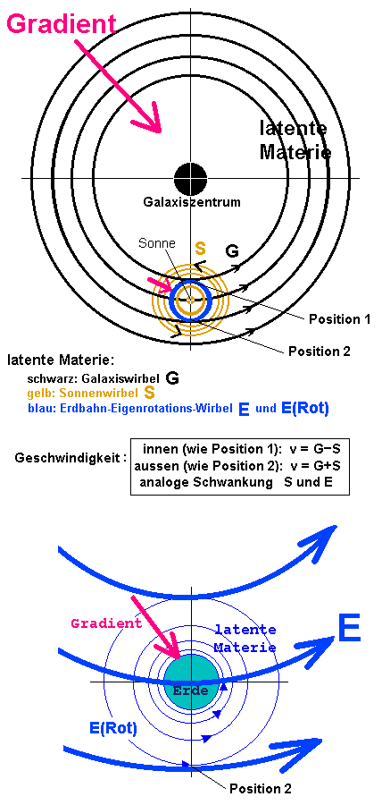

PlanetenWenn es eine stabile stehende Strmung der latenten Materie ist, auf der sich ein Planet bewegt, quasi schwimmt wie im Golfstrom, dann gibt es gar keine Relativgeschwindigkeit. Es sei denn - und hier wird es interessant - die Strmung und der Planet haben Bremsphasen und Beschleunigungsphasen mit Pi/2 Phasenverschiebung. Der Planet ist dann mal langsamer als die Strmung, fliegt rckwrts bezglich der Strmung, von auen gesehen noch vorwrts, aber gebremst (Auftrieb nach auen - Bewegung Richtung Aphel). Am Aphel ist er am langsamsten, die Strmung hat aber auch abgenommen und holt ihn nicht mehr ein, sie sind gleich. Die Strmung nimmt weiter ab, und kommt jetzt von vorn, weil er ihr entgegenfliegt. Das gibt Abtrieb, der Planet lenkt Richtung Sonne ein und beschleunigt. Die Strmung wchst wieder, genau ab Pi/2 vor dem Perihel, der Planet hat sie aber immer noch von vorn. Er beschleunigt, wenn auch langsamer, hat dann gleichgezogen am Perihel, aber jetzt berholt ihn die Strmung und leitet wegen dem Auftrieb nach auen, dem Wegwenden von der Sonne, seine Bremsphase ein auf dem Weg zum Aphel. Pi/2 vor dem Aphel fngt die Strmung selber zu bremsen an, bleibt aber noch schneller als der Planet und strmt ihn weiter von hinten an, bis zum Aphel. Alles gut bekannt von Strom uns Spannung. So wre es noch relativ einfach. Aber es gibt Hinweise auf eine viel verwickeltere Bahn: Wegen dem 9-jhrigen Chi-Zyklus (FengShui, Chi strmt aller 9 Jahre aus derselben Himmelrichtung) und wegen dem 7-jhrigen Gedchtniszyklus (gleiche Position im 9-fach-Torkado). In Flugrichtung des ganzen Sonnensystems wiederholt sich so etwas wie eine rumliche 9-fach Lemniskate (Torkado, synodisch gesehen), die 7 Jahre siderisch dauert. Mich wundert noch, da die offenbar mit keiner Periheldrehung einhergeht, die Spiralen mssen schn bereinander liegen. Die Kontraktion der Erdbahn whrend der kurzen Phase nach 'oben' (weg von Michstraenebene) merken wir nicht, weil Raum und Zeit gleichsinnig schwanken, so da c konstant bleibt. Aber den Vakuum-Wellenwiderstand sollte man jedes Jahr neu messen ! Desweiteren dürfte folgender Aufbau der Latenten
Materei vorhanden sein  Meine Email-Adresse: info@aladin24.de |